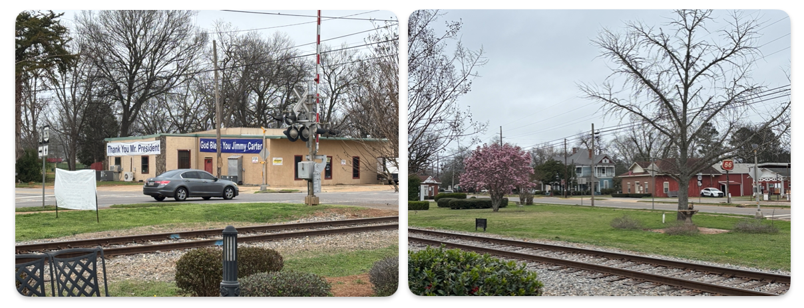
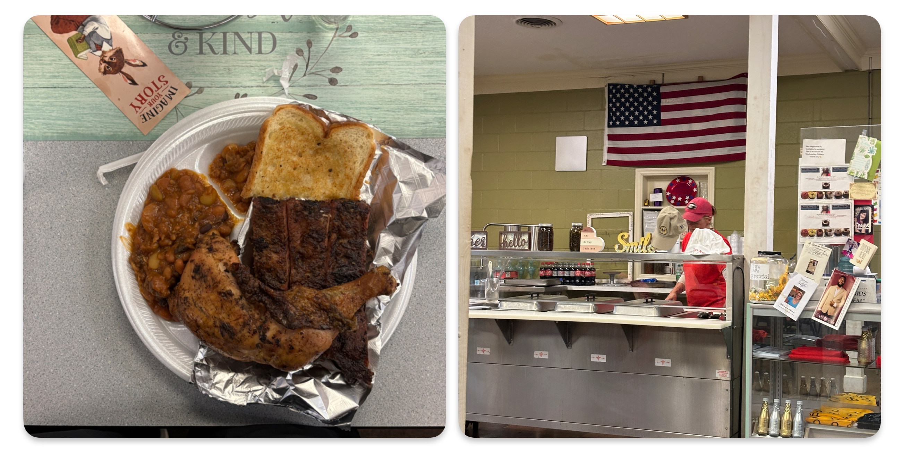
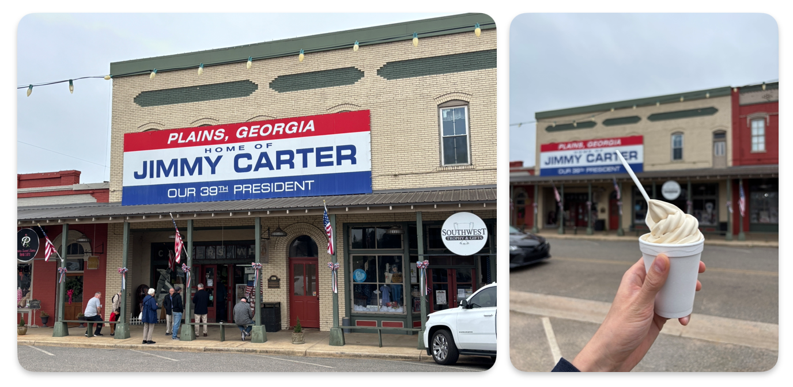

普莱恩斯很小。从主路拐进去，姑且可以被称作“中心”的地方的一个十字路口。几栋低矮的建筑，一条几乎可以一眼望到头的街。地图上只能搜到两家餐馆。
这是吉米·卡特长大的地方。

根据他的自传，1930年代的这里和中国农村似乎也有相同之处：佃农可以用粮食交租，鸡蛋可以用来交换，每个人都知道不同大小的鸡蛋值多少钱。杀一头猪，需要把人叫齐，一起做完。很多事情不是靠价格，而是靠彼此之间的记忆和分工。这是一种不太依赖制度的生活方式。
在南方，种族隔离当然根深蒂固。书里的人被分在不同的位置。“大萧条”的突如其来让北方佬和联邦政府又成为替罪羊。尽管种族隔离依然存在，白人和黑人出于他们共有的贫穷，又开始在某种程度上互相接受。
普莱恩斯的白人孩子上普莱恩斯中学，黑人孩子则在十几个教堂或者私人家里上课。如果想继续读书，通常要离开这里：要么去位于雅典的佐治亚大学，要么去隔壁州阿拉巴马的奥本大学。
我现在就在佐治亚大学，她在1961年迎来了第一位注册的黑人学生。
我从雅典开了三个小时车来到普莱恩斯，走进那两家餐馆中的一间。前厅是一位白人阿姨，后厨是一位黑人阿姨，她们都管我叫 honey。这种称呼听起来很亲近，但也很统一。由于太饿了，我点了超过一个人的食物：鸡腿、三块猪肋骨、豆子，还有吐司。我吃得很快。后厨的阿姨出来看了一眼，惊奇地问我是不是都吃完了。

结账的时候，我问她们是不是只收现金。我身上只有20美元。她说不是，我们也可以刷卡。她算完账之后说：“你这么远开过来，如果想付现金的话，给20就行了。” 她说这句话的时候，没有停顿，也没有再看账单，像是在做一件不需要计算的事情。
她后来又和我聊了一会儿，问我从哪里来，问我是不是第一次到这里，说来这里的人都爱吉米·卡特。临走前，她问同事对面的冰淇淋店还开不开。“就在那块红白蓝的牌子下面，” 她说，“花生酱味最好。” 她把我送到门口，说：“God bless you.” 这句话在这里听起来不像是一种额外的善意，更像是一种默认的结尾。

书里写鸡蛋可以当钱，这里，一顿饭也可以变成20美元。书里写的是一个被分开的世界，这里，前厅和后厨是连在一起的，但分工仍然清楚。书里没有太多关于“好人”的说法，只有做事、记账、祈祷，还有对他人最基本的体谅。
在这样的地方，价格似乎并不是一个固定的数字，而是一种可以被重新商量的关系。这种“可以商量”，也依赖于彼此知道对方是谁。
在这样的地方长大的孩子，后来在竞选时，把自己说成是一个花生农。有些人把这种说法理解为一种政治姿态，但在这里，它更像是一种延续。
延伸阅读：Jimmy Carter, An Hour Before Daylight: Memories of a Rural Boyhood (2001)
{kind=link}
{kind=link}
{kind=link}